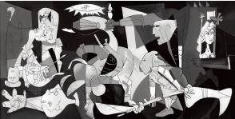

Pablo Picasso’nun Guernica tablosu – modern savaş hâlinin şok edici ve güçlü bir görseli – İspanya İç Savaşı (1936-1939) boyunca Alman bombardıman uçaklarınca yıkılan küçük bir kasaba üzerine işlenmiş bir karmaşa atmosferini betimler.

Ocak 1937’de İspanya’nın Cumhuriyetçi hükümeti, Paris’te yapılacak olan Uluslararası Sergi’deki fuaye için dönemin en bilinen ressamı olan Pablo Picasso’dan (1881-1937) bir resim siparişi etti.
26 Nisan gününde faşist yetkililer tarafından komuta edilen Alman bombacıları, kuzey İspanya’da Guernica adlı Bask kasabasını yıktılar. Bu, aslında insanlık tarihinde kesin olarak sivil bir hedef üzerinde yapılan ilk hava saldırısıydı. Olaydan çok etkilenen ve Cumhuriyetçiler’in bir sempatizanı olan Picasso, uluslararası dikkati korkunç savaşa çekmeyi umarak devasa (üç metre otuz beş santimetreye yedi metre altmış iki santimetre uzunluğunda) bir duvar resmiyle öne çıktı. Picasso’nun o zamanlar metresi olan Dora Maar, süreci bir dizi fotoğrafla belgeledi.
Guernica kompozisyonu, iki dikdörtgen tarafından yanlardan desteklenen merkezi bir üçgenden meydana gelir. Üçgenin tepesinde yaralı bir atın sade ışıklandırılmış kafası, tüm masum kurbanların acı çekişini iletir. Solundaki boğa, Picasso’ya göre, zalimliği ve karanlığı temsil eder. Boğanın altında yas tutan bir kadın ölü çocuğunu, çarmıha gerilmiş oğlunu tutan Azize Meryem’in Hıristiyan görsellerini andırır bir şekilde tutar. Resmin ayaklarında yayılmış oturan, elindeki kırık kılıcıyla savaş uçaklarıyla çarpışmayı uman, işi bitmiş bir hemşeridir. Sağında ızdırap içinde üç figür vardır. Resim, yapay kübizmi andıran bir biçimde yapılmıştır. Picasso kolaj kullanmamasına rağmen, figürlerin bir kısmı gazeteden kesilip tuvale yapıştırılmış gibi dururlar.
Eser, Paris Sergisi’nde sergilenmesinden sonra, İskandinavya’ya sonra da Londra’ya gönderildi. Faşistler İspanya’da zafer kazandıkları zaman Picasso, Guernica tablosunun New York’taki Modern Sanatlar Müzesi’ne gönderilmesini talep etti. Resmin, ancak ülke faşizmden kurtarıldığında İspanya’ya iade edilmesini istediğini belirtti. General Francisco Franco’nun ölümünden sonra resim1981’de, bugün görülebildiği Reina Sofia Müzesi’nin olduğu Madrid’e gönderildi.
EK BİLGİLER:
1. “Guernica”nın bir duvar halısı kopyası, Nelson Rockefeller tarafından Birleşmiş Milletler için sipariş edildi.
2. Bask milliyetçileri, resmin Guernica’nın kırk kilometre batısında, Bilbao’daki yeni Guggenheim Müzesi’ne gönderilmesini, verdikleri bir dilekçeyle istediler.